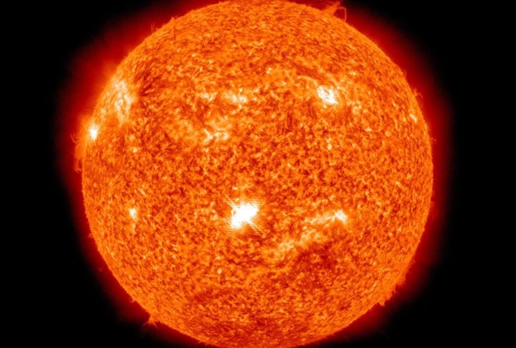
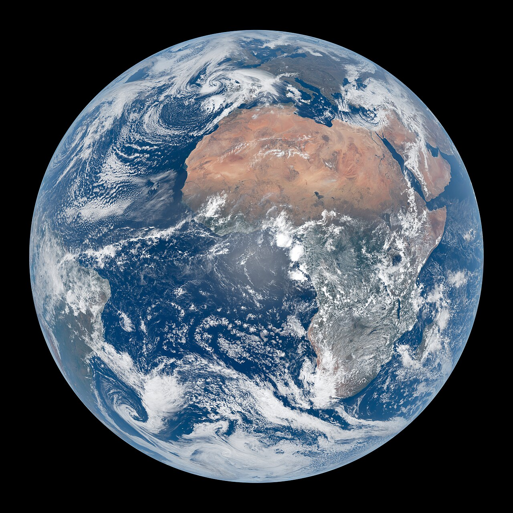

Сонце

Земля
Знайомство із Сонячною системою
Сонце

Центральне тіло нашої планетної системи - Сонце. Утіленням Сонця в грецькій міфології був бог Апполон. У надрах Сонця за температури в десятки мільонів градусів Цельсія та величезного тиску відбуваються так звані термоядерні реакції. Вони супроводжуються виділенням великої кількості енергії. Щосекунди Сонце випромінює таку кількість тепла, якого б вистачило розтопити шар льоду заввишки тисячу кілометрів.

Термоядерні реакції продовжуватимуться, поки в ядрі Сонця не вичерпаються запаси Гідрогену. Нині вони складають близько 60 % маси Сонця. Такої кількості вистачить щонайменше на кілька десятків мільярдів років.
Наше Сонце - джерело не тільки тепла та світла. Його зовнішні зони - фотосфера, хромосфера та корона
випромінюють  токиевии ультрафіолетових і ретеіських променів, які впливають на характер процесів у земній атмосфері. Ще багато років тому вчені помітили, що активність Сонця підпорядковується своєрідним циклам,
протягом яких вона досягає максимального значення, а поті знову спадає. Це відбувається приблизно кожні 11 років. У роки максимальної сонячної активності збільшується кількість плям та спалахів на поверхні світила, невидиме випромінювання досягає найбільшої інтенсивності. У цей час на Землі виникають магнітні бурі, відбуваються порушення радіозвʼязку.
токиевии ультрафіолетових і ретеіських променів, які впливають на характер процесів у земній атмосфері. Ще багато років тому вчені помітили, що активність Сонця підпорядковується своєрідним циклам,
протягом яких вона досягає максимального значення, а поті знову спадає. Це відбувається приблизно кожні 11 років. У роки максимальної сонячної активності збільшується кількість плям та спалахів на поверхні світила, невидиме випромінювання досягає найбільшої інтенсивності. У цей час на Землі виникають магнітні бурі, відбуваються порушення радіозвʼязку.
Характеристики Сонця
- Діаметр - 1 392 000 км
- Період обертання навколо осі - 27 діб
- Маса - 332 946 мас Землі
- обʼєм - 1 303 600 обʼємів Землі
- температура поверхні - 5500 °С
- Температура ядра - 15 000 000 °c
- Період обертання навколо центра Галактики - 225 млн років